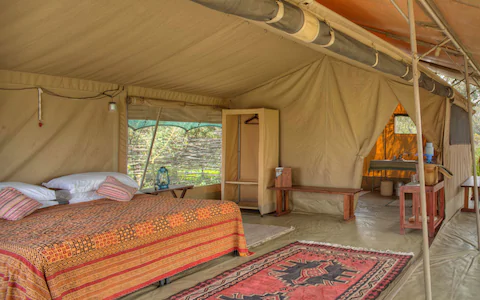

Serian 'The Original'
Expert Rating:8/10
Meaning 'serene' in the Maasai language, Serian effortlessly lives up to its name. In the private Mara North Conservancy on the fringes of the Maasai Mara, this tented camp offers exceptional wildlife viewing with award-winning guides, elegant accommodation and tantalising dining
Mara North Conservancy, KenyaFROM £ 910 pn
Saruni Samburu Lodge
Expert Rating:8/10
Offering stunning views over the plains, the lodge is located on the top of a rocky outcrop in the Kalama Conservancy bordering Samburu National Reserve. The spacious open-fronted villas feature open-air showers. There are two infinity pools and a massage hut. The cuisine has an Italian influence
KenyaPrice:FROM-£ 619 pn
Fairmont Mount Kenya Safari Club
Expert Rating:8/10
Located on the beautiful foothills of Mount Kenya, the elegant Fairmont Mount Kenya Safari Club is set in 100 acres of landscaped gardens, with fantastic mountain views. There’s also an excellent golf course, an on-site animal orphanage and plenty to do, from horse riding to game viewing on bicycles
Nairobi, KenyaCheck availability for dates and prices
&Beyond Bateleuer Camp
Expert Rating:8/10
An elegant, modern camp with Kenya’s Maasai Mara National Reserve on the doorstep and easy access to the Mara River crossings. It combines all mod cons, including an eye-shaped pool and extensive gin bar, with a step-back-in-time feel and warthogs and monkeys scampering around the grounds
Location: Maasai Mara National Reserve, KenyaPrice:£ 570 per person per night
Villa Rosa Kempinski
Expert Rating:8/10
Villa Rosa Kempinski, an imposing rose-hued 10-floor hotel situated on the edge of the business district, is an ideal base from which to explore Nairobi, but its numerous restaurants and excellent spa and pool more than warrant staying in and enjoying the first-class service
Location: Nairobi, KenyaPrice:FROM £ 150 pn
Ol Malo
Expert Rating:8/10
Ol Malo is a charming game sanctuary set on a 5,000-acre working ranch. It provides a delightful escape from urban life, set in an astounding natural landscape, and with a range of unusual safari activities on offer. Staying here is a hands-on, exciting way to experience Kenya’s wildlife
Location: Laikipia, KenyaPrice:FROM £ 1,272 pn
Borana Lodge
Expert Rating:8/10
Perched on a hillside in East Africa’s largest rhino sanctuary, the elegant rustic cottages here are built with local stone and wood, while bathrooms are built around rock. The local vegetable garden provides the kitchen with fresh greens, and there are plenty of activities including rhino tracking and mountain biking
Location: Laikipia, KenyaPrice:FROM £ 950 pn
Sosian LodgeExpert Rating:8/10

Set in the heart of Laikipia, this friendly cattle and wildlife ranch dating back to the 1940s has only seven rooms. The atmosphere is intimate and welcoming, and there are plenty of activities on offer including horse-riding, camel safaris and game drives.
Location: Laikipia, KenyaPrice:FROM £ 571 pn
Lono Lodge
Expert Rating:8/10
Italian and Swahili architecture fuse in this fort-like villa on a quiet spot on Kenya’s Watamu beach. The friendly owners delight in sharing their charming home with others, while the expansive gardens have ample space for privacy.
Location: Watamu, KenyaPrice:FROM £ 250 pn